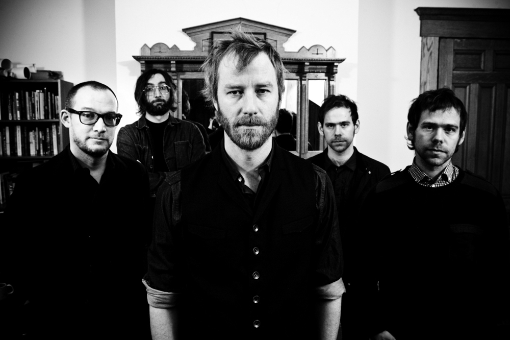

Apartment Story (2007)
Boxer (2007)
Trouble Will Find Me (2013)
The National is an American indie rock band from Cincinnati, Ohio, formed in 1999. Currently based in Brooklyn, the band consists of Matt Berninger, Aaron Dessner, Bryce Dessner, Scott Devendorf and Bryan Devendorf.
